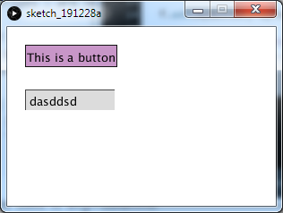
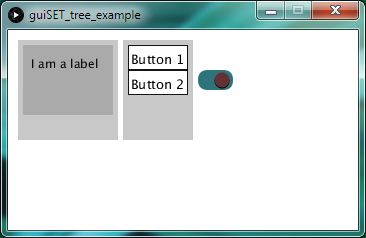

Introduction for beginners
Outline:To start off you first need to import the library
Write:
import guiSET.classes.*; import guiSET.core.*;
at the top of your sketch.
Or easier: choose Sketch/Import Library/guiSET in the Processing IDE.
First lines
First we need a Frame object. The Frame is basically the "Master" to which all
other GUI elements need to
be added to. By default it fills out the entire sketch window. You need to pass the sketch itself to
Frame
and that is not possible as global variable. The best (really only) way to do this is in
setup():
Write:
Frame f;
void setup(){
f = new Frame(this);
}
and not:
Frame f = new Frame(this);
void setup(){
}
Also it is necessary to implement the draw() method (even if it is empty) for otherwise the code will just freeze after setup().
If you run your program now, you should see a blank window which is rather less exciting - so let's add some
stuff! For example you might want a button and a textbox but beware! - they should better be intialized
after Frame f = new Frame(this);. You can then start to set properties and modify the look of
button and
textbox. At last they need to be added to the Frame (but you could also do that right at the
start).
Frame f;
Button myButton;
Textbox myTextbox;
void setup(){
size(300, 200); // set window size to width=300, height=200
f = new Frame(this);
myButton = new Button();
myTextbox = new Textbox();
f.add(myButton, myTextbox); // adds both components to the Frame
myButton.setText("This is a button"); // set the displayed text - this will automatically resize the button
myButton.setBackgroundColor(color(200, 150, 200)); // set the background color of the button to some purple tone
myButton.setPosition(20, 20); // set the position of the button on the sketch in pixel
myTextbox.setPosition(20, 70); // set the position of the textbox on the sketch in pixel
}
void draw(){
}
The result should now look somewhat like this:
Listeners
What would a program be without listeners? Let us see how to create some with guiSET. Wait, what is a listener? An (event) listener is something that "listens" all the time for something specific to happen and then notifies you. For example a key (to be more precise for example a keydown) listener "listens" all the time if the user presses a key on the keyboard and tells you so if he does and also which key is being pressed down and more information.
In our example we would probably want to do something when the button is clicked i.e. print a message. In
setup() we write: myButton.addMouseListener("press", "myButton_pressed"); and
create a suitable method
somewhere:
void myButton_pressed(){
println("I've been pressed");
}
"press" means the listener will listen for a downpress of the mouse. Alternatives are
myButton.addMouseListener("release", "myButton_pressed"); or "drag", "wheel" and some more, and
of course
you could call the method myButton_pressed() just like you wish.
If you need details about the mouse event (say you need the x-coordinate) then re-write your so-called callback method to:
void myButton_pressed(MouseEvent e){
println(e.getX());
}
The MouseEvent object works just like when using the
void mousePressed(MouseEvent e) or similar methods from
Processing.
Let's try something new:
Frame f;
Button myButton;
Textbox myTextbox;
void setup() {
size(300, 200);
f = new Frame(this);
myButton = new Button();
myTextbox = new Textbox();
f.add(myButton, myTextbox);
myButton.setText("This is a button");
myButton.setBackgroundColor(color(200, 150, 200));
myButton.setPosition(20, 20);
myButton.addMouseListener("press", "myButton_pressed");
myTextbox.setPosition(20, 70);
/*
* New Part
*/
myTextbox.addTextChangedListener("myTextbox_textChanged");
}
void myButton_pressed(){
}
void myTextbox_textChanged(){
myButton.setText(myTextbox.getText());
}
void draw() {
}
Now every time you change the text of the textbox by entering or deleting stuff the text of the button is changed.
There is a lot more to say about listeners but for now just be aware that the standard listeners implemented in each component of this library are
- press
- release
- enter (mouse enters this element)
- exit (mouse leaves this element)
- drag (mouse is pressed down and dragged somewhere)
- move (happens all the time when mouse is moved over this element - called VERY often)
- wheel (mouse scroll wheel)
- focus (fires when this element gets focus (i.e. a textbox gets focus when you click it so you can enter text)
- resize (don't bother for now)
While all mouse events are added with addMouseListener(String type, String methodname) focus
and resize
listener are added with addFocusListener(String methodname) and
addResizeListener(String methodname).
Other Components have further listeners, like the Textbox which features:
- textChanged -
addTextChangeListener(String methodName)>/li> - submit -
addSubmitListener(String methodName)(called when you press enter while textbox has focus) - keyPress -
addKeyPressListener(String methodName)
Oh, and each type of listener can be added only once to each object.
About Trees
In programming, a tree is an important data structure which starts off with one element (called root) that
has one or more children which in turn can have children etc. The same idea is used here. Our root is the
Frame and all the other elements need to be children. I'll explain that with an example:
import guiSET.classes.*;
import guiSET.core.*;
Frame f;
Container outerContainer;
Container innerContainer;
VFlowContainer vfc;
Button button1;
Button button2;
Label label;
Switch mySwitch;
void setup() {
size(350, 200);
f = new Frame(this);
button1 = new Button("Button 1");
button2 = new Button("Button 2");
label = new Label("I am a label");
outerContainer = new Container(100, 100);
innerContainer = new Container(90, 70);
vfc = new VFlowContainer(70, 100);
mySwitch = new Switch("", true);
outerContainer.setPosition(10, 10);
outerContainer.setBackgroundColor(color(200));
innerContainer.setPosition(5, 5);
innerContainer.setBackgroundColor(color(170));
vfc.setPosition(outerContainer.getWidth() + outerContainer.getX() + 5, 10);
vfc.setBackgroundColor(color(200));
vfc.setPadding(5);
mySwitch.setPosition(vfc.getX() + vfc.getWidth() + 5, 40);
label.setPadding(10);
// interesting part comes here
f.add(outerContainer, vfc, mySwitch);
vfc.add(button1, button2);
outerContainer.add(innerContainer);
innerContainer.add(label);
}
void draw() {
}
Running this sketch gives following surface:

The outerContainer, the vfc and mySwitch are added to f.
innerContainer is added to
outerContainer and
label to that one. The buttons are children of vfc. Alltogether, the structure of
all elements looks like
this:
This way we can create arbitrarily complex structures - and the good thing: if you move a container, all the children go with it (same if you set the visiblity or enabled to false). This comes in handy if you need to position/move a lot of elements.